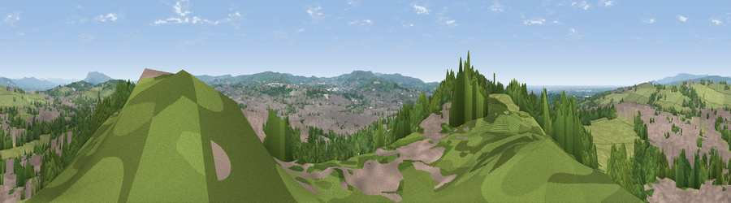

Viewpoint near Blackburn
#5504 in England · top 8% of its area beats it · near BlackburnWhere it is
The exact computed spot (SD 67475 29375). Click the marker for map links.
The view, rendered

A 360° render of this exact spot computed from the terrain model, tree cover and land cover — summer colours, afternoon light, calibrated against photographs of famous viewpoints. Real trees, hedges and buildings will differ in detail.
The panorama
Grey silhouette: terrain skyline in each direction (720 bearings, Earth curvature and refraction included). Dashed green: skyline with trees (+15 m) and buildings (+8 m) as obstacles. Blue strip: how far the ground is visible on each bearing.
Where the view opens
Wedge length = distance to the farthest visible ground on that bearing (vegetation-aware). Rings at 10, 25 and 50 km.
What fills the view
37% built-up · 34% grassland · 28% woodland
Angular shares of the visible panorama (visual magnitude), not map area. Landscape diversity 0.50 (0–1 Shannon).
Key numbers
More beautiful places nearby
The staircase of upgrades: each row has a higher view potential than everything closer. Driving times are estimates from straight-line distance, calibrated against real road routing — check an actual route before setting out.
| Place | Direction | Drive | Score |
|---|---|---|---|
| Viewpoint near Pleasington | SW · 2 km | ~5 min | 74.8 |
| Darwen Hill | S · 8 km | ~16 min | 80.7 |
| Rivington Pike | SSW · 16 km | ~28 min | 81.9 |
| White Brow | S · 17 km | ~30 min | 82.9 |
| Warton Crag | NNW · 47 km | ~68 min | 83.2 |
| Viewpoint near Grange-over-Sands | NNW · 56 km | ~78 min | 83.4 |
| Viewpoint near Cartmel | NNW · 59 km | ~81 min | 87.0 |
| Viewpoint near Cartmel | NNW · 59 km | ~82 min | 87.2 |
53.75971, -2.49482 · source: screening · position refined by local search. Computed location — check access rights before visiting.